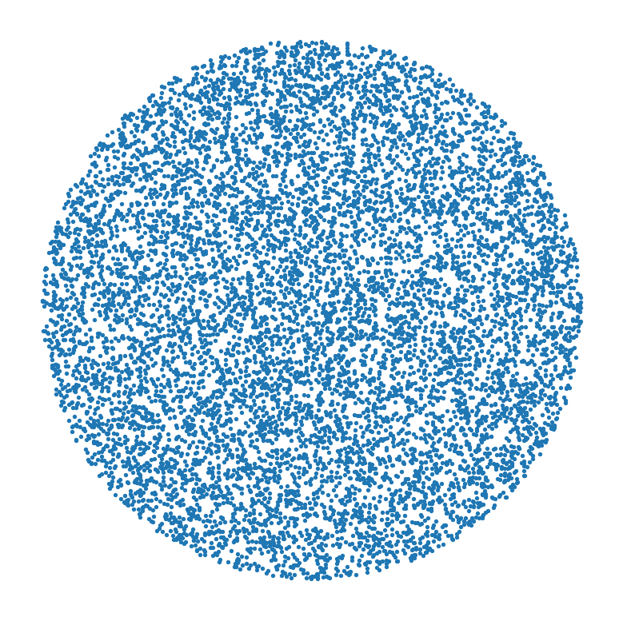

Code
import numpy as np
import matplotlib.pyplot as plt
# 1. Sample the points
N = 10000
inv_cdf = lambda x: np.sqrt(x)
R = np.vectorize(inv_cdf)(np.random.uniform(0, 1, N))
T = np.random.uniform(0, 2*np.pi, N)
points = [(r * np.cos(t), r * np.sin(t)) for r, t in zip(R, T)]
# 2. Make a scatter plot
x, y = zip(*points)
plt.scatter(x, y, s=1)
plt.xticks([])
plt.yticks([])
ax = plt.gca()
ax.set_aspect('equal')
ax.spines['top'].set_visible(False)
ax.spines['right'].set_visible(False)
ax.spines['bottom'].set_visible(False)
ax.spines['left'].set_visible(False)
plt.show()